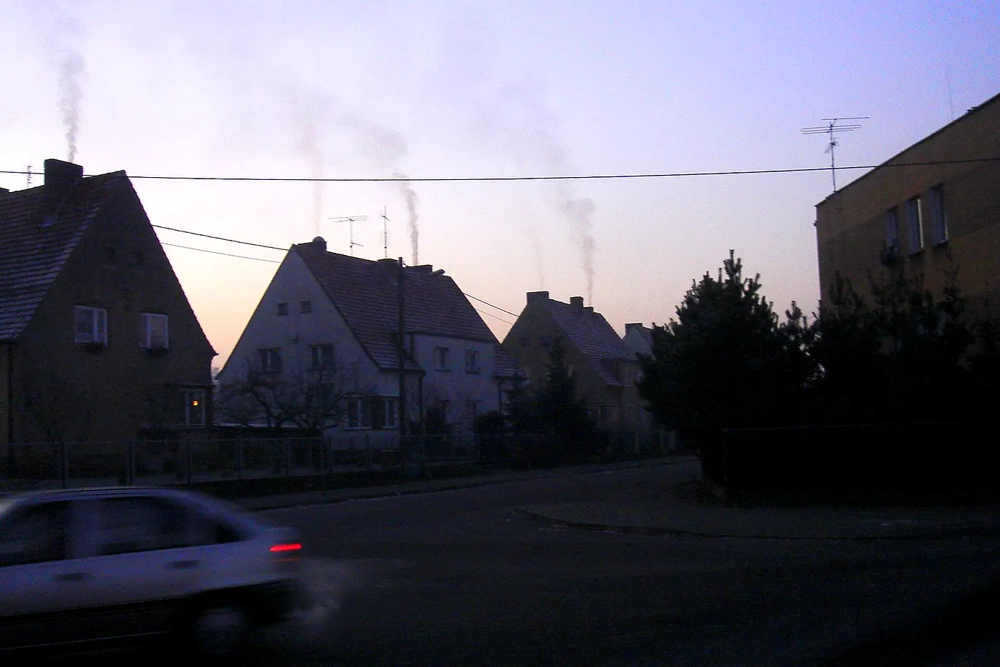

Czad w liczbach 2018–2025: zdarzenia, ranni i ofiary według danych KG PSP
Dane · Komenda Główna PSP
W latach 2018–2025 Państwowa Straż Pożarna odnotowała w Polsce 59 360 zdarzeń związanych z tlenkiem węgla. Rannych zostało 18 034 osób, zginęły 674. Poniżej liczby dla kraju, województw, powiatów i rodzajów budynków, prosto z arkusza Komendy Głównej PSP.


- Źródło
- Komenda Główna PSP, pismo BKG-III.065.144.2026 z 17 listopada 2026 r.
- Zakres
- lata kalendarzowe 2018–2025; 16 województw, 380 powiatów i miast na prawach powiatu, 52 kategorie budynków
- Stan danych
- arkusz otrzymany 17 listopada 2026 r., 6 947 wierszy
Polska rok po roku
Zdarzenia związane z tlenkiem węgla w Polsce, 2018–2025
| Rok | Zdarzenia | Ranni | Ofiary śmiertelne |
|---|---|---|---|
| 2018 | 7 332 | 3 409 | 71 |
| 2019 | 7 779 | 2 917 | 59 |
| 2020 | 6 334 | 1 804 | 48 |
| 2021 | 6 434 | 1 944 | 79 |
| 2022 | 6 685 | 1 664 | 107 |
| 2023 | 7 327 | 2 180 | 108 |
| 2024 | 7 345 | 1 998 | 102 |
| 2025 | 10 124 | 2 118 | 100 |
| 2018–2025 | 59 360 | 18 034 | 674 |
Źródło: Komenda Główna PSP, pismo BKG-III.065.144.2026 z 17 listopada 2026 r., arkusz „Zdarzenia związane z tlenkiem węgla”. Obliczenia własne: sumy wierszy arkusza.
Najwięcej zdarzeń arkusz pokazuje w 2025 r. (10 124), najmniej w 2020 r. (6 334). Najwięcej ofiar śmiertelnych było w 2023 r. (108), najmniej w 2020 r. (48). Arkusz nie podaje przyczyn zmian między latami i my ich nie dopisujemy.
Województwa: zdarzenia
Zdarzenia związane z tlenkiem węgla według województw, 2018–2025
| Województwo | 2018 | 2019 | 2020 | 2021 | 2022 | 2023 | 2024 | 2025 | Razem |
|---|---|---|---|---|---|---|---|---|---|
| śląskie | 2 678 | 2 868 | 2 416 | 2 595 | 2 646 | 2 790 | 3 076 | 4 196 | 23 265 |
| małopolskie | 606 | 834 | 717 | 725 | 820 | 901 | 975 | 1 377 | 6 955 |
| dolnośląskie | 659 | 667 | 508 | 512 | 533 | 615 | 565 | 739 | 4 798 |
| podkarpackie | 557 | 713 | 506 | 408 | 461 | 420 | 422 | 615 | 4 102 |
| wielkopolskie | 316 | 397 | 402 | 481 | 540 | 504 | 419 | 504 | 3 563 |
| zachodniopomorskie | 333 | 327 | 255 | 263 | 232 | 381 | 319 | 426 | 2 536 |
| mazowieckie | 291 | 294 | 230 | 178 | 203 | 231 | 210 | 399 | 2 036 |
| pomorskie | 322 | 296 | 179 | 198 | 199 | 263 | 224 | 312 | 1 993 |
| łódzkie | 208 | 223 | 240 | 231 | 239 | 267 | 226 | 261 | 1 895 |
| opolskie | 243 | 197 | 167 | 179 | 198 | 258 | 194 | 286 | 1 722 |
| kujawsko-pomorskie | 284 | 229 | 161 | 178 | 158 | 182 | 169 | 236 | 1 597 |
| świętokrzyskie | 233 | 210 | 141 | 136 | 137 | 163 | 168 | 193 | 1 381 |
| warmińsko-mazurskie | 197 | 173 | 150 | 135 | 112 | 124 | 124 | 150 | 1 165 |
| lubuskie | 205 | 169 | 120 | 100 | 104 | 109 | 128 | 221 | 1 156 |
| lubelskie | 155 | 144 | 111 | 89 | 77 | 92 | 92 | 147 | 907 |
| podlaskie | 45 | 38 | 31 | 26 | 26 | 27 | 34 | 62 | 289 |
| Polska | 7 332 | 7 779 | 6 334 | 6 434 | 6 685 | 7 327 | 7 345 | 10 124 | 59 360 |
Źródło: Komenda Główna PSP, pismo BKG-III.065.144.2026 z 17 listopada 2026 r., arkusz „Zdarzenia związane z tlenkiem węgla”. Obliczenia własne: sumy wierszy arkusza.
Województwa: ofiary śmiertelne
Ofiary śmiertelne zdarzeń związanych z tlenkiem węgla według województw, 2018–2025
| Województwo | 2018 | 2019 | 2020 | 2021 | 2022 | 2023 | 2024 | 2025 | Razem |
|---|---|---|---|---|---|---|---|---|---|
| śląskie | 11 | 16 | 18 | 27 | 24 | 31 | 40 | 29 | 196 |
| małopolskie | 6 | 3 | 3 | 7 | 14 | 9 | 11 | 14 | 67 |
| podkarpackie | 2 | 8 | 4 | 10 | 15 | 10 | 7 | 7 | 63 |
| wielkopolskie | 4 | 4 | 2 | 7 | 9 | 11 | 5 | 7 | 49 |
| mazowieckie | 13 | 9 | 1 | 6 | 6 | 5 | 2 | 6 | 48 |
| dolnośląskie | 3 | 2 | 3 | 5 | 9 | 15 | 6 | 1 | 44 |
| łódzkie | 4 | 4 | 4 | 2 | 4 | 5 | 6 | 7 | 36 |
| zachodniopomorskie | 5 | 5 | 5 | 0 | 1 | 5 | 7 | 7 | 35 |
| pomorskie | 3 | 1 | 0 | 4 | 7 | 4 | 4 | 5 | 28 |
| kujawsko-pomorskie | 8 | 0 | 4 | 2 | 4 | 4 | 2 | 0 | 24 |
| warmińsko-mazurskie | 3 | 1 | 0 | 2 | 7 | 2 | 3 | 2 | 20 |
| opolskie | 5 | 2 | 1 | 2 | 0 | 2 | 4 | 2 | 18 |
| lubelskie | 1 | 1 | 1 | 2 | 3 | 3 | 0 | 4 | 15 |
| świętokrzyskie | 1 | 1 | 2 | 1 | 2 | 1 | 2 | 5 | 15 |
| lubuskie | 2 | 2 | 0 | 1 | 0 | 1 | 2 | 4 | 12 |
| podlaskie | 0 | 0 | 0 | 1 | 2 | 0 | 1 | 0 | 4 |
| Polska | 71 | 59 | 48 | 79 | 107 | 108 | 102 | 100 | 674 |
Źródło: Komenda Główna PSP, pismo BKG-III.065.144.2026 z 17 listopada 2026 r., arkusz „Zdarzenia związane z tlenkiem węgla”. Obliczenia własne: sumy wierszy arkusza.
Liczby nie są przeliczone na mieszkańca. Województwo z większą liczbą ludności i mieszkań ma zwykle więcej zdarzeń, więc sama kolejność w tabeli nie mówi, gdzie ryzyko jest największe.
Rodzaje budynków
Zdarzenia według rodzaju budynku, suma lat 2018–2025
| Rodzaj budynku (nazwa z arkusza KG PSP) | Zdarzenia | Ranni | Ofiary śmiertelne |
|---|---|---|---|
| Wielorodzinne | 44 934 | 12 402 | 346 |
| Jednorodzinne, w tym bliźniaki, zabudowa szeregowa | 9 852 | 4 882 | 253 |
| brak kategorii | 2 931 | 4 | 0 |
| Budynki mieszkalne w gospodarstwach rolnych | 454 | 229 | 24 |
| Handlowo-usługowe, w szczególności sklepy, domy towarowe, lokale gastronomiczne, hurtownie, zakłady usługowe | 235 | 69 | 6 |
| Oświaty i nauki, w szczególności budynki dydaktyczne, szkoły, przedszkola | 101 | 36 | 0 |
| pozostałe kategorie (46) | 853 | 412 | 45 |
| Razem | 59 360 | 18 034 | 674 |
Źródło: Komenda Główna PSP, pismo BKG-III.065.144.2026 z 17 listopada 2026 r., arkusz „Zdarzenia związane z tlenkiem węgla”. Obliczenia własne: sumy wierszy arkusza.
Nazwy kategorii przepisaliśmy z arkusza bez zmian. „Brak kategorii” to także kategoria z arkusza, a nie nasz dopisek.
Powiaty z największą liczbą zdarzeń
20 powiatów i miast z największą liczbą zdarzeń, suma lat 2018–2025
| Powiat albo miasto | Województwo | Zdarzenia | Ranni | Ofiary śmiertelne |
|---|---|---|---|---|
| Kraków | małopolskie | 3 269 | 374 | 9 |
| Katowice | śląskie | 2 394 | 439 | 19 |
| Częstochowa | śląskie | 2 178 | 361 | 11 |
| Bielsko-Biała | śląskie | 1 804 | 264 | 12 |
| Bytom | śląskie | 1 437 | 397 | 15 |
| Jastrzębie-Zdrój | śląskie | 1 404 | 106 | 10 |
| Ruda Śląska | śląskie | 1 193 | 346 | 7 |
| Tychy | śląskie | 1 186 | 127 | 5 |
| Sosnowiec | śląskie | 1 091 | 235 | 10 |
| Wrocław | dolnośląskie | 1 014 | 239 | 5 |
| Chorzów | śląskie | 981 | 324 | 8 |
| Zabrze | śląskie | 931 | 258 | 6 |
| Gliwice | śląskie | 788 | 279 | 8 |
| Rybnik | śląskie | 752 | 171 | 2 |
| oświęcimski | małopolskie | 717 | 179 | 3 |
| Siemianowice Śląskie | śląskie | 671 | 290 | 4 |
| Łódź | łódzkie | 665 | 276 | 9 |
| Żory | śląskie | 654 | 105 | 4 |
| Świętochłowice | śląskie | 650 | 195 | 4 |
| Kielce | świętokrzyskie | 624 | 78 | 3 |
Źródło: Komenda Główna PSP, pismo BKG-III.065.144.2026 z 17 listopada 2026 r., arkusz „Zdarzenia związane z tlenkiem węgla”. Obliczenia własne: sumy wierszy arkusza.
Dane KG PSP obejmują wszystkie 380 powiatów i miast, rok po roku i z podziałem na rodzaj budynku. Liczby dla konkretnego powiatu podamy na prośbę wysłaną przez stronę O serwisie.
Jak czytać te liczby
- Lata kalendarzowe, nie sezony grzewcze. Komunikaty straży zwykle liczą sezon od października do marca. Tych liczb nie da się więc wprost zestawić z komunikatami o „sezonie”.
- Nazwy kolumn są z arkusza: liczba zdarzeń, ranni, ofiary śmiertelne. Arkusz nie zawiera definicji tych pojęć, dlatego ich nie rozwijamy.
- Liczba zdarzeń to nie liczba poszkodowanych. Przy tej samej liczbie zdarzeń arkusz pokazuje w jednych powiatach wielu rannych, a w innych żadnego.
- Bez przeliczenia na mieszkańców. Do porównań między powiatami potrzebna jest liczba ludności albo mieszkań z innego źródła.
- Sumy liczymy sami z wierszy arkusza. Suma dla kraju, województw, powiatów i rodzajów budynków daje ten sam wynik: 59 360 zdarzeń, 18 034 rannych, 674 ofiar śmiertelnych.
Skąd są dane
Dane przekazała Komenda Główna Państwowej Straży Pożarnej w piśmie z 17 listopada 2026 r. Jest to odpowiedź na wniosek o udostępnienie informacji publicznej z 4 listopada 2026 r., który złożył właściciel serwisu. Strona instytucji: Komenda Główna PSP.
Dane można cytować z podaniem źródła: Komenda Główna PSP, a przy korzystaniu z naszych tabel także adresu tej strony. Błąd w przepisaniu zgłosisz przez stronę O serwisie.